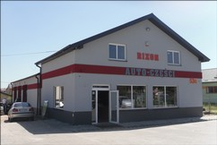

O Firmie: Sklep, Serwis, Stacja Kontroli Pojazdów
Nasza firma powstała w roku 2007 i od tego czasu systematycznie się rozwija. W roku 2011 firma została przeniosiona do nowego budynku oraz została uruchomia Stacja Kotnroli Pojazdów. Zajmujemy się sprzedażą części nowych oraz używanych. Zapewniamy najniższą cenę w regionie ponieważ kupujemy towar bezpośrednio od importerów i nie narzucamy marży handlowej jak inni sprzedawcy. Nasz serwis Serwis specjalizuje się w bieżących naprawach samochodów osobowych, terenowych i dostawczych. Gwarantujemy wysoki poziom naszych usług. Każdy samochód otrzymuje książkę serwisową, w której znajdują się szczegółowe informacje dotyczące napraw podczas serwisowania w Rixonie.
